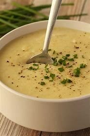

Potato Leek Soup

Description
This recipe is for potato leek soup. It's one of my favorite soups to make, especially in winter. Both potatoes and leeks are hardy and afforadable, and neither are difficult to find in American, Italian, or Scottish grocery stores. I'd also consider this recipe to be rather bare bones; you can always add to it, as you please.
If you don't enjoy cream-based recipes, I'd skip this one. It's very filling and has plenty of fat, which I enjoy, but may be a turn off for others. You can always modify it to meet your needs, but I find without the cream and butter, it's not quite as comforting of a meal.
Ingredients
- Potatoes
- Leeks
- Cream
- Butter
- Stock or stock cube
- Paremesan cheese or rind
- Flour or starch
- Salt and pepper
- Lemon juice
- Parsley (for garnish)
One of my favorite things about cooking dinner is getting to experiment with flavors and how the food cooks down and combines, and getting to reduce food waste and customize my food. Because of all this, I am super anti-recipe, so I don't want to add amounts for anything. A general rule-of-thumb could be equal amounts of leeks and potatoes, a handful of cheese, half an inch of a stick of butter, and more of anything if it needs it. I like to add lemon juice, for example.
Steps
- Wash all of your produce. Leeks are super sandy, so now is a good time to chop off both edges and slice it length-wise. Seperate the segments and rinse each part of its silt.
- Add the butter to medium-sized pot and turn the heat to medium.
- Dice the potatoes into approx. 1cm cubes. This will allow for more flavor absorption, more even browning, and faster cooking. Slight variations don't matter. Feel free to go bigger but cooking the potatoes will take longer.
- After the butter is melted but before it's bubbly, put the potatoes in.
- Chop the leeks into 1/2"-1" segments. About half-way through doing this (or every couple of minutes depending on your speed), stir the potatoes to check how the browning is going and if they're softening. You don't want them to get too translucent yet.
- Once the leeks are chopped, wait for the potatoes to be slightly more cooked. Approx. 7 minutes of cooking total. Then add the leeks.
- Next add in the stock cube or the stock. If using the stock cube, break it up a bit at the bottom of the pan before adding water, then add approximately 4 cups.
- Put a lid on it and let it simmer.
- While this is cooking, mix together a few tablespoons of flour and water. Any starch will work here. If you don't want to use glutinous flour, feel free to experiment. Use cold water and a seperate bowl, or the flour will clump up when it's added to the soup.
- When your soup is nearly ready (approx. 1 minute left to cook) add in the cream and the flour water slurry and stir.
- Add salt, pepper, and lemon juice. I would use a minimum of one lemon in this, and top the bowls with more. It's optional, but the acid of the juice will cut through the cream and butter well.
- When it's finished cooking, ladle it into bowls and garnish with parsley.
Enjoy!op